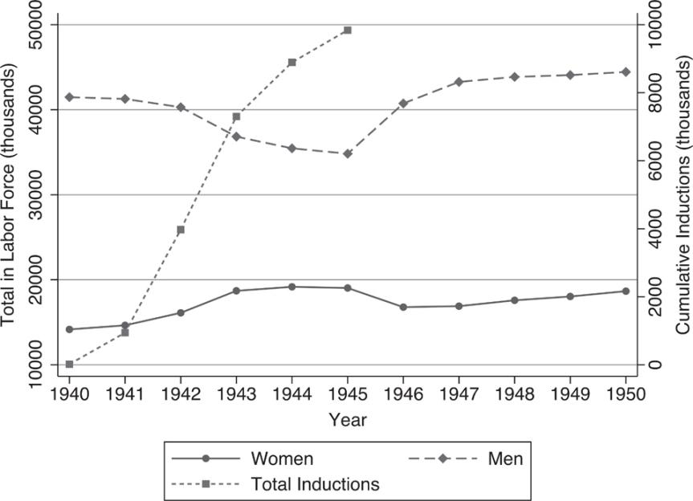
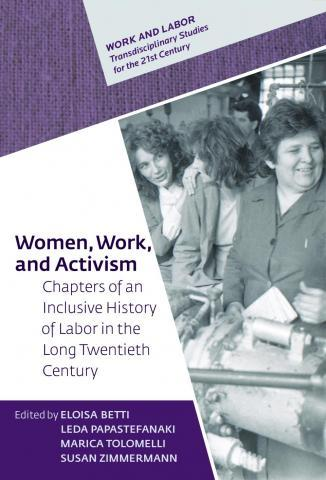

United Electrical, Radio, and Machine Workers of America Records
Ziqi Zhao
1.Historical panorama of the United Electrical, Radio and Machine Workers of United States 1920s - 2010s
United Electrical, Radio, and Machine Workers of America (UE) Records is a digital archive stored in the University of Pittsburgh's Digital Collections. This archive is a comprehensive reflection of the UE growth before and after World War II, which not only provides a valuable perspective for the study of the United States labor movement, but also provides a unique window into the United States industrial development, social change, and political upheaval of the 20th century.
2.A digital archive with a variety of forms
This archived document is the historical archive of the United Electrical, Radio, and Machine Workers of United States, and it contains all issues of the union's official newspaper, UE News, from 1939 to 2010. It also contains photographs of the activities, officials, and members of the United States Electrical, Radio, and Machine Workers Association in the Pittsburgh area from 1936 to 1959. It serves as a collection of historical records that reflect the founding and development of the UE Union, as well as its activities and social impact in different historical periods. These records not only record the internal affairs of the trade unions, but also record the specific measures taken by the trade unions to deal with the deindustrialization of the country's economy through the agreements between the company and the trade unions, newspapers and periodicals.
Archives are made up of many types of resources, including textual materials, still images, and mixed materials. Resource types include newspapers, serials, images, manuscripts, and search guides. These sources are from the UE Press Photo Collection, UE Contracts, etc., and were created by the United States Federation of Electrical, Radio, and Machine Workers, relevant photographers (Pittsburgh and Pennsylvania), George Dorrill and others. These archives were originally created and maintained by the Electrical, Radio, and Machine Workers Federation of United States and have been maintained by the Department of Archives and Special Collections (A&SC) within the University of Pittsburgh Library System since 1975.
3.Comprehensive view of official sources
The Digital Archive of the United Electrical, Radio and Machine Workers of United States is an important scholarly resource because of its comprehensive perspective, broad regional coverage, and authoritative material. First, the materials in the archives are diverse and contain interpretations of the development of the UE, the work of UE members, and their observations of social change. Second, the archives not only document national movements and events, but also pay special attention to local unions in western Pennsylvania and northern West Virginia, such as UE Local 601 and UE Local 610. Finally, the material in the archives is authoritative and credible. These materials are sourced directly from UE's official records, including meeting minutes, policy documents, correspondence, and visual artwork created by union members and supporters.
The UE Digital Archive is a comprehensive 70-year history of UE and spans multiple areas of academic research. For example, the history of the labor movement, industrial development and economic changes, the status of women with the development of the labor movement, etc. This digital archive also complements other archives. Among them, the UE Digital Archive records the increasing participation of women in social production and manufacturing before and after World War II, and the establishment of the UE Women's Conference after World War II, which reflects the gradual improvement of women's status and the formation of related organizations. This adds to the archives of the National Organization for Women (NOW) the foundation and historical context of why NOW was established (NOW, 2003). Women, Work, and Activism: Chapters of an Inclusive History of Labor in the Long Twentieth Century explores women's movements in the twentieth century, including the UE Women's Conference protests for pay equality during and after World War II (Betti et al., 2022). Beyond the Feminine Mystique: A Reassessment of Postwar Mass Culture, 1946-1958 explores the role and contribution of women in the UE and how they influence the agendas and activities of trade unions (Fonow et al., 2024).

Figure 1 Civilian Labor Supply and Military Inductions During WWII (Fonow et al., 2024)

Figure 2 Cover of Women, Work, and Activism. Chapters of an Inclusive History of Labor in the Long Twentieth Century (NOW , 2003)
4.Based on the UE labor movement, a more egalitarian social system still needs to be explored
Founded in 1936 and growing during World War II, the United States Electrical, Radio and Machine Workers Union played an important role in organizing labor, bargaining collectively, improving working conditions, participating in politics, and defending workers' rights. Currently, labor groups are still facing issues that UE has been fighting against, the existing labor market is being hit by advanced technology, equal pay for women for equal work, policies and laws to protect labor rights, and so on.
Taking the relationship between the labor market and advanced technology as an example, The advent of AI and automation has led to major changes in workers' skills, working conditions, and employment opportunities. The digital archive documents the strategies adopted by trade unions in response to technological change and in defending the interests of workers. In modern labour relations, this struggle persists, and workers are still faced with the fact that existing education and training resources may not be sufficient to meet the needs of large-scale skills shifting, and that existing social security systems may not be able to adequately cope with mass unemployment (Diaz et al., 2024).
The UE Digital Archive inspires us to find out the impact of the technological revolution on the labor market, how to establish a more flexible and universal lifelong learning system, so that more workers can adapt to the rapidly changing labor market; Establish a more comprehensive and adaptable social protection system to protect all workers from the negative effects of technological change, such as unemployment and wage cuts. How workers should be more involved in the process of technology adoption and decision-making on working conditions.
Reference
[1] NOW Newsletters Collective. (1969-2003). NOW newsletters from Pittsburgh's regional chapters. In National Organization for Women (NOW) Newsletters. University of Pittsburgh. https://digital.library.pitt.edu/collection/now-newsletters
[2] Betti, E., Papastefanaki, L., Tolomelli, M., & Zimmermann, S. (Eds.). (2022). Women, Work, and Activism: Chapters of an Inclusive History of Labor in the Long Twentieth Century. Central European University Press. https://doi.org/10.7829/j.ctv280b7xs
[3] Fonow, Mary Margaret, Suzanne Franzway. (2024) .Women’s Activism in U.S. Labor Unions, The Oxford Handbook of U.S. Women's Social Movement Activism, Oxford Handbooks (2017; online edn, Oxford Academic, 10 May 2017), https://doi.org/10.1093/oxfordhb/9780190204204.013.36
[4] Diaz Pavez, Luis R. & Martínez-Zarzoso, Inmaculada. (2023). The impact of automation on labour market outcomes in emerging countries. The World Economy. https://doi.org/ 10.1111/twec.13523.

generated by Pitt Fuego
Why make a spark when you can light a fire?